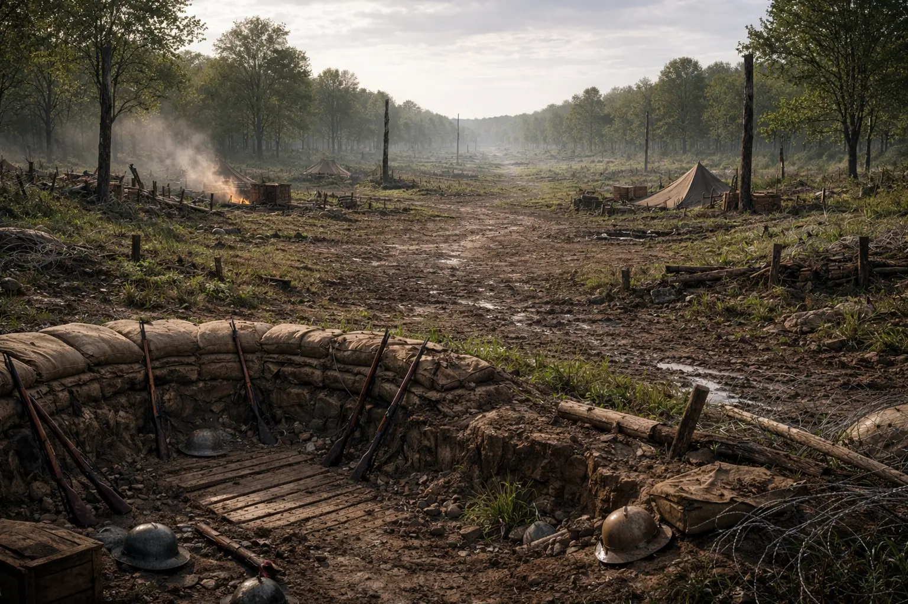

The William and Charles Bradshaw Collection (1914-1945)
| Reference Number | BRAD |
|---|---|
| Level of Description | Collection |
| Date(s) | 1914–1945 |
| Name of Creator(s) |
Bradshaw, William Robert Bradshaw, Charles |
| Format | 1 box, 8 volumes |
| Administrative History | This collection remained in the possession of the descendants of William and Charles Bradshaw until they deposited the collection with Edge Hill University. |
| Conditions Governing Access |
None. Further information on access is available here: https://archives.edgehill.ac.uk/about Open Access |
| Access Status | Open |
| Copyright | Copyright is held by the descendants and heirs of William and Charles Bradshaw |
| Conditions Governing Reproduction | Permission required |
| Name |
Bradshaw, Charles Bradshaw, William Robert |
Description
This collection comprises materials created by and/or originally belonging to William Bradshaw and his son, Charles. The collection relates to their time serving during the First World War (1914-1918) and the Second World War (1939-1945).
William Robert Bradshaw (born 10th January 1884) lived in Widnes, Cheshire, with his wife, Mary Ann (referred to as Annie), and their three children, Grace, Thomas and Charles, at the outbreak of the First World War in 1914, although his family had moved to Longton, near Preston, Lancashire, before he returned.
He volunteered to fight in the Great War in November 1914, serving with the 4th Liverpool Pals (renamed the 20th Service Battalion). After training, he was sent to France in November 1915. He was taken prisoner by the Germans in spring 1918 and would remain a PoW until the end of the War when he was able to return home in December 1918. He died in 1969.
Charles Bradshaw, born 1911, served in Europe and North Africa with the 48th Bn. Royal Tank Regiment during the Second World War and survived the War. He died in 1977.
Content Warning: As historical resources, the nature of the items and the catalogue descriptions in this collection reflect the language and thinking of the era in which it was created, and some items include language and imagery which is offensive, oppressive and may cause upset. These ideas are not condoned by Edge Hill University, but we are committed to providing access to this material as evidence of the inequalities and attitudes of the time period.